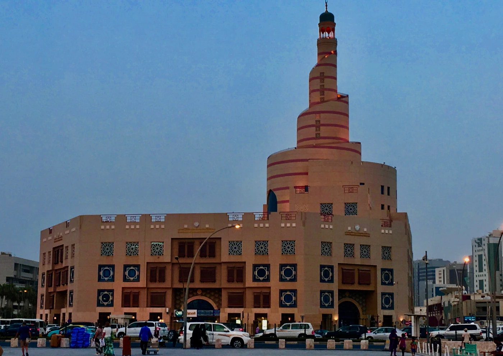

Lean Arabic
In July 2018, Gabrielle travelled to Qatar and Jordan as part of the Australia Middle East Journalism Exchange which contributed significantly to her journalism studies.
It allowed for a taste of the Middle East, to be able to effectively report to audiences by providing a true understanding of the issues and being better informed by the experience.
Gabrielle wanted to have some basic Arabic to take over with her and undertook a beginner’s course with the Institute of Australia Middle East. With her teacher, Mohanned Kassar, she brought together some easy going podcasts to provide conversational basics.
Perhaps it will come in handy for that brief stopover in Dubai – have a listen!
Lean Arabic – Time for some food